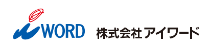

入場無料予約不要
こだわりの書籍展示とセミナーのご案内

編集にかかる時間とコストを減らして、
こだわりの本づくりをしませんか？
本づくり専門印刷会社として60年、アイワードは書籍の企画、編集、情報処理、データベース制作、製版、印刷、製本のあらゆる分野にわたってお手伝いしてきました。
このたび、当社が作成してきましたこだわりの製品を展示し、アイワードが独自に開発したシステムや汎用アプリを運用するノウハウなど、本づくりにかかわるセミナーを行います。
書籍展示の見学のみの方も歓迎しておりますので、お気軽にお越しください。
「作業」はデジタルでスマートに。
「本づくり」はもっとクリエイティブに。
最新のオンライン校正から、資料の自動データベース化、そして心を奪う「こだわりの造本」の裏側まで。効率化と品質向上を両立させる、これからの本づくりに出会う3つの特別セミナー＆展示会。
タイムテーブルは裏面をご参照ください。
- 日時
- 2026年11月26日（木）10:00〜18:00
- 会場
- 日本教育会館 703号室東京都千代田区一ツ橋2丁目6−2都営新宿線・三田線、東京メトロ半蔵門線「神保町」駅 A1出口 徒歩約5分
お問い合わせ
主催株式会社アイワード 東京営業部
〒101-0065 東京都千代田区西神田2丁目4番3号 高岡ビル
- TEL
- 03-3239-3939
- info@iword.co.jp
